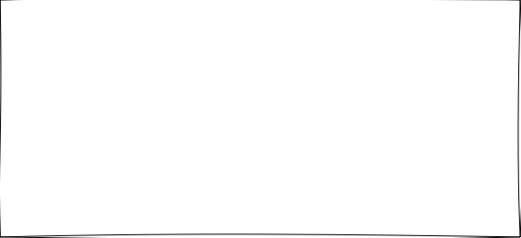
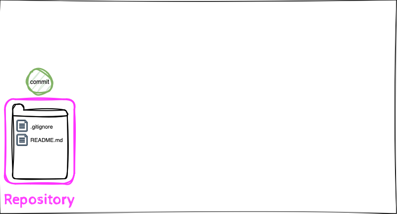
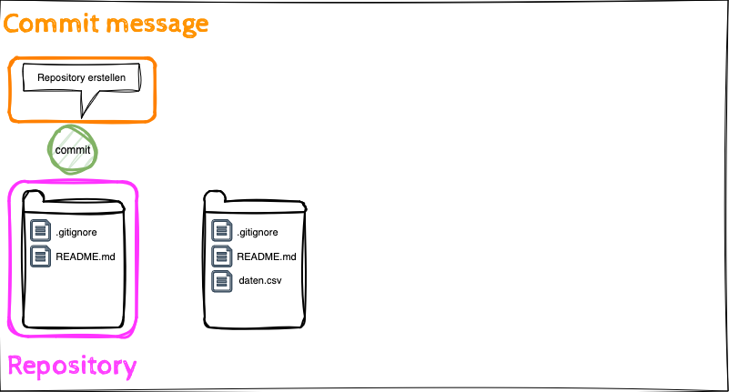
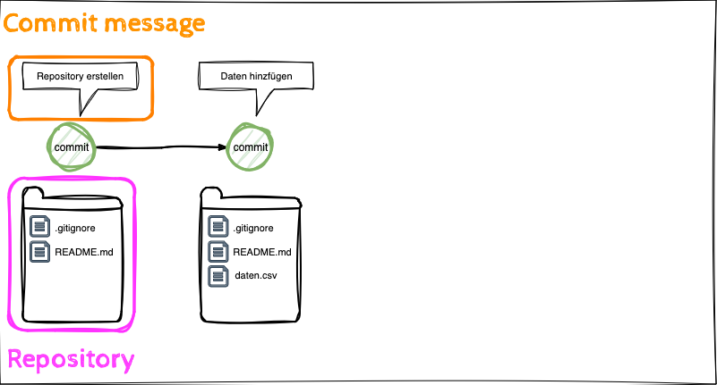
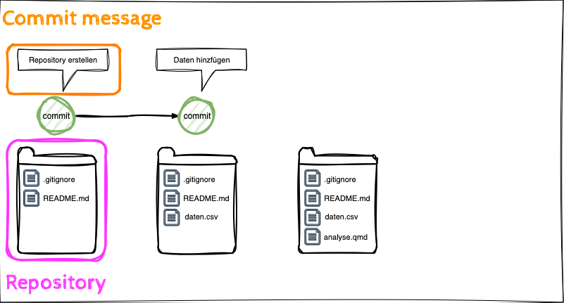
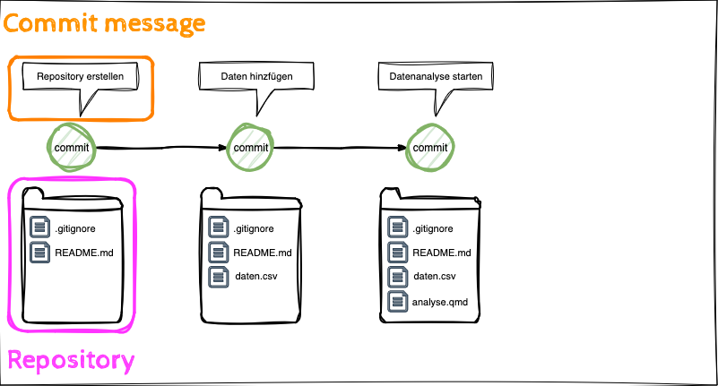
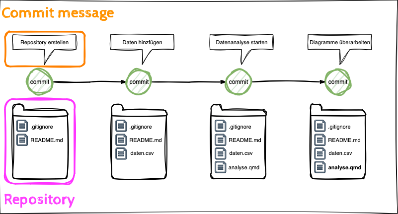
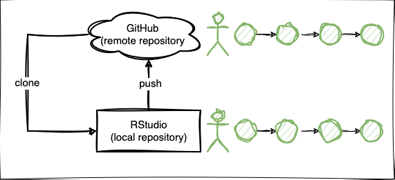
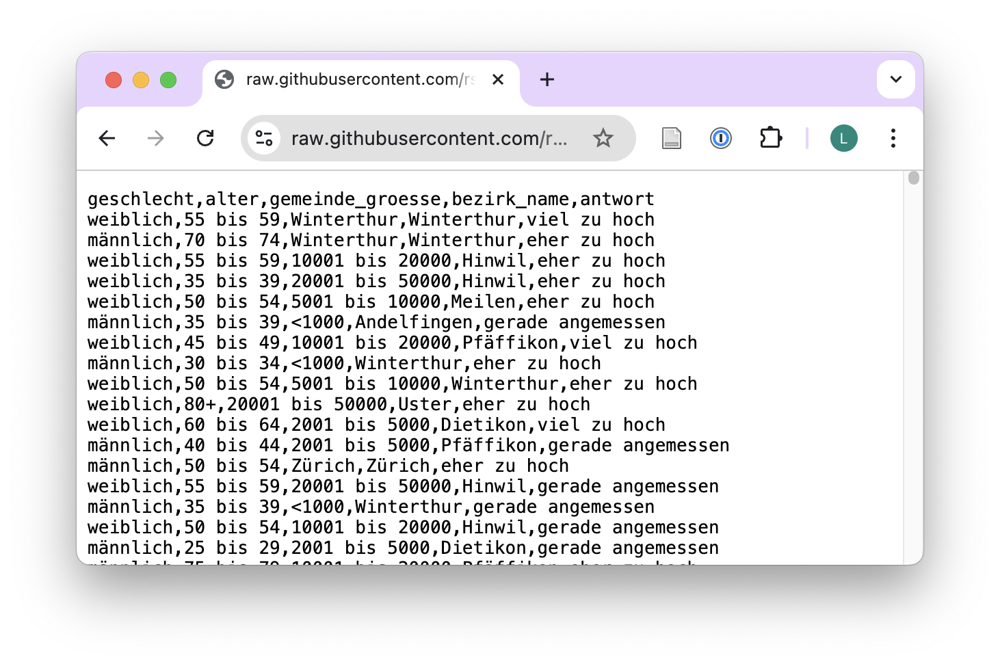
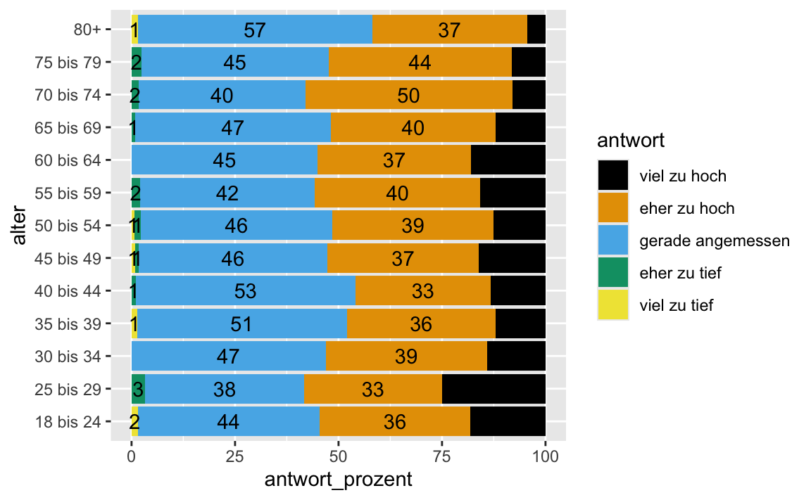

- Die Lernenden können Daten aus Dateien im CSV und XLSX-Format importieren, die sich in Unterverzeichnissen des Stammverzeichnisses, und auf GitHub, befinden.
- Die Lernenden können den Unterschied zwischen drei Arten von Daten erörten: (1) unverarbeitete Rohdaten; (2) verarbeitete, analysefähige Daten, und (3) Daten, die einer Veröffentlichung zugrunde liegen.
- Die Lernenden können die Anwendung der Git Befehle clone, commit, push beschreiben.
- Die Lernenden können die Begriffe local und remote Repository unterscheiden.
Daten Import & Daten Management & Kollaboratives Arbeiten mit GitHub II
rstatsZH - Data Science mit R
Lernziele (für diese Woche)
Git Befehle













Faktoren in R
Variablen Typen
Numerisch
Diskrete Variablen
- nicht negative
- zählbare
- ganze Zahlen
- z.B. Anzahl Schüler, Würfelwurf
Stetige (kontinuierliche) Variablen
- unendliche Anzahl von Werten
- zwischen zwei Werten
- auch Datums/Uhrzeitwerte
- z.B. Länge, Gewicht, Grösse
Nicht numerisch
Kategoriale Variablen
- endliche Anzahl von Werten
- eindeutige Gruppen (z.B. EU Länder)
- ordinal, wenn diese eine logische Reihenfolge/Rangordnung aufweisen (z.B. Wochentage)
ordinal skalierte Daten in R
- ordinal skalierte Daten sind kategoriale Daten, die eine logische Reihenfolge aufweisen
- in R werden Text-Daten standardmässig als
charactergespeichert - Beurteilungen: sehr gut, gut, mittel, schlecht, sehr schlecht
- die Reihenfolge von Text Daten ist aplhabetisch
df |>
arrange(beurteilung) # A tibble: 5 × 2
name beurteilung
<chr> <chr>
1 Bob gut
2 Charlie mittel
3 Diana schlecht
4 Alice sehr gut
5 Eve sehr schlechtordinal skalierte Daten in R
- in R können wir ordinal skalierte Daten mit dem
factorDatentyp speichern - die Level geben die Reihenfolge der Kategorien an
- die Umwandlung beeinflusst das Verhalten der Daten in Tabellen und Diagrammen
# Faktor Level werden in einem Vektor definiert
beurteilung_level <- c("sehr schlecht", "schlecht", "mittel", "gut", "sehr gut")
df |>
# Die Spalte wird in einen Faktor umgewandelt
mutate(beurteilung = factor(beurteilung, levels = beurteilung_level)) |>
# Die Tabelle wird nach der Reihenfolge sortiert
arrange(beurteilung)# A tibble: 5 × 2
name beurteilung
<chr> <fct>
1 Eve sehr schlecht
2 Diana schlecht
3 Charlie mittel
4 Bob gut
5 Alice sehr gut Ich bin dran: Faktoren in R
Zurücklehnen und genießen!
Pause machen
Bitte steh auf und beweg dich. Lasst eure E-Mails in Frieden ruhen.

10:00
Ihr seid dran: 02-faktoren-ihr.qmd
- Öffne posit.cloud in deinem Browser (verwende dein Lesezeichen).
- Öffne den rstatszh-k009 Arbeitsbereich (Workspace) für den Kurs.
- Klicke auf Start neben md-04-uebungen.
- Suche im Dateimanager im Fenster unten rechts die Datei
02-faktoren-ihr.qmdund klicke darauf, um sie im Fenster oben links zu öffnen. - Folge den Anweisungen in der Datei.
25:00
Daten einlesen
Rechteckige Daten in R einlesen

CSV & XLSX
readr
read_csv()- durch Kommas getrennte Werteread_csv2()- durch Semicolon getrennte Werte (Tipp für das Konvertieren von xlsx als csv)read_tsv()- durch Tab getrennte Werteread_delim()- liest Dateien mit beliebigem Trennzeichen
readxl
read_excel()- liest xls oder xlsx Dateien
Daten aus CSV-Dateien lesen
- Import von unbearbeiteten Rohdaten
befragung <- read_csv("raw/KTZH_00001341_00002759_frage7a1.csv"). . .
befragung# A tibble: 1,213 × 5
geschlecht alter gemeinde_groesse bezirk_name antwort
<chr> <chr> <chr> <chr> <chr>
1 weiblich 55 bis 59 Winterthur Winterthur viel zu hoch
2 männlich 70 bis 74 Winterthur Winterthur eher zu hoch
3 weiblich 55 bis 59 10001 bis 20000 Hinwil eher zu hoch
4 weiblich 35 bis 39 20001 bis 50000 Hinwil eher zu hoch
5 weiblich 50 bis 54 5001 bis 10000 Meilen eher zu hoch
6 männlich 35 bis 39 <1000 Andelfingen gerade angemessen
7 weiblich 45 bis 49 10001 bis 20000 Pfäffikon viel zu hoch
8 männlich 30 bis 34 <1000 Winterthur eher zu hoch
9 weiblich 50 bis 54 5001 bis 10000 Winterthur eher zu hoch
10 weiblich 80+ 20001 bis 50000 Uster eher zu hoch
# ℹ 1,203 more rowsDaten als CSV-Datei schreiben
- transformiere Daten
- exportiere verarbeitete, analysereife Daten
antwort_levels <- c("viel zu hoch", "eher zu hoch", "gerade angemessen",
"eher zu tief", "viel zu tief")
befragung_fct <- befragung |>
mutate(antwort = factor(antwort, levels = antwort_levels)) . . .
befragung_fct# A tibble: 1,213 × 5
geschlecht alter gemeinde_groesse bezirk_name antwort
<chr> <chr> <chr> <chr> <fct>
1 weiblich 55 bis 59 Winterthur Winterthur viel zu hoch
2 männlich 70 bis 74 Winterthur Winterthur eher zu hoch
3 weiblich 55 bis 59 10001 bis 20000 Hinwil eher zu hoch
4 weiblich 35 bis 39 20001 bis 50000 Hinwil eher zu hoch
5 weiblich 50 bis 54 5001 bis 10000 Meilen eher zu hoch
6 männlich 35 bis 39 <1000 Andelfingen gerade angemessen
7 weiblich 45 bis 49 10001 bis 20000 Pfäffikon viel zu hoch
8 männlich 30 bis 34 <1000 Winterthur eher zu hoch
9 weiblich 50 bis 54 5001 bis 10000 Winterthur eher zu hoch
10 weiblich 80+ 20001 bis 50000 Uster eher zu hoch
# ℹ 1,203 more rowswrite_csv(befragung_fct, "daten/processed/ktzh-befragung-zufriedenheit.csv")Analysefertige Daten einlesen
- Was ist aus unserem Faktor geworden?
befragung_fct <- read_csv("daten/processed/ktzh-befragung-zufriedenheit.csv")befragung_fct# A tibble: 1,213 × 5
geschlecht alter gemeinde_groesse bezirk_name antwort
<chr> <chr> <chr> <chr> <chr>
1 weiblich 55 bis 59 Winterthur Winterthur viel zu hoch
2 männlich 70 bis 74 Winterthur Winterthur eher zu hoch
3 weiblich 55 bis 59 10001 bis 20000 Hinwil eher zu hoch
4 weiblich 35 bis 39 20001 bis 50000 Hinwil eher zu hoch
5 weiblich 50 bis 54 5001 bis 10000 Meilen eher zu hoch
6 männlich 35 bis 39 <1000 Andelfingen gerade angemessen
7 weiblich 45 bis 49 10001 bis 20000 Pfäffikon viel zu hoch
8 männlich 30 bis 34 <1000 Winterthur eher zu hoch
9 weiblich 50 bis 54 5001 bis 10000 Winterthur eher zu hoch
10 weiblich 80+ 20001 bis 50000 Uster eher zu hoch
# ℹ 1,203 more rowsWo ist der Faktor?
- Faktoren können in CSV Dateien nicht gespeichert werden
- Eine CSV Datei enthält lediglich Werte, getrennt durch ein Komma

Wie speichern wir Faktoren?
- In R können Daten als
.rdsDatei gespeichert werden .rdsDateien speichern die Struktur der Daten- Faktoren und andere Datenstrukturen bleiben erhalten
write_rds(befragung_fct, "folien/daten/processed/ktzh-befragung-zufriedenheit.rds"). . .
befragung_rds <- read_rds("daten/processed/ktzh-befragung-zufriedenheit.rds")befragung_rds# A tibble: 1,213 × 5
geschlecht alter gemeinde_groesse bezirk_name antwort
<chr> <chr> <chr> <chr> <fct>
1 weiblich 55 bis 59 Winterthur Winterthur viel zu hoch
2 männlich 70 bis 74 Winterthur Winterthur eher zu hoch
3 weiblich 55 bis 59 10001 bis 20000 Hinwil eher zu hoch
4 weiblich 35 bis 39 20001 bis 50000 Hinwil eher zu hoch
5 weiblich 50 bis 54 5001 bis 10000 Meilen eher zu hoch
6 männlich 35 bis 39 <1000 Andelfingen gerade angemessen
7 weiblich 45 bis 49 10001 bis 20000 Pfäffikon viel zu hoch
8 männlich 30 bis 34 <1000 Winterthur eher zu hoch
9 weiblich 50 bis 54 5001 bis 10000 Winterthur eher zu hoch
10 weiblich 80+ 20001 bis 50000 Uster eher zu hoch
# ℹ 1,203 more rowsDaten zusammenfassen
- für eine Visualisierung oder Tabelle in einer veröffentlichten Arbeit
befragung_sum_alter <- befragung_rds |>
group_by(alter, antwort) |>
summarise(antwort_anzahl = n()) |>
mutate(antwort_prozent = antwort_anzahl / sum(antwort_anzahl) * 100)befragung_sum_alter# A tibble: 52 × 4
# Groups: alter [13]
alter antwort antwort_anzahl antwort_prozent
<chr> <fct> <int> <dbl>
1 18 bis 24 viel zu hoch 12 18.2
2 18 bis 24 eher zu hoch 24 36.4
3 18 bis 24 gerade angemessen 29 43.9
4 18 bis 24 viel zu tief 1 1.52
5 25 bis 29 viel zu hoch 15 25
6 25 bis 29 eher zu hoch 20 33.3
7 25 bis 29 gerade angemessen 23 38.3
8 25 bis 29 eher zu tief 2 3.33
9 30 bis 34 viel zu hoch 9 14.1
10 30 bis 34 eher zu hoch 25 39.1
# ℹ 42 more rowsDaten visualisieren
- in einer Veröffentlichung
ggplot(data = befragung_sum_alter,
mapping = aes(x = antwort_prozent,
y = alter,
fill = antwort)) +
geom_col() +
geom_text(aes(label = round(antwort_prozent, 0)),
position = position_stack(vjust = 0.5)) +
scale_fill_colorblind() 
Daten exportieren
- Daten, die einer Veröffentlichung zugrunde liegen
- als CSV-Datei
- erhöht die Wiederverwendbarkeit
write_csv(befragung_sum_alter,
"daten/final/ktzh-befragung-zufriedenheit-sum.csv")Daten Management
| Begriff | Ordnername | Erklärung | Dateiformat |
|---|---|---|---|
| unbearbeitete Rohdaten | data/raw | Daten, die nicht bearbeitet wurden und in ihrer ursprünglichen Form und Datei bleiben | often XLSX, also CSV, JSON, and others |
Daten Management
| Begriff | Ordnername | Erklärung | Dateiformat |
|---|---|---|---|
| unbearbeitete Rohdaten | data/raw | Daten, die nicht bearbeitet wurden und in ihrer ursprünglichen Form und Datei bleiben | often XLSX, also CSV, JSON, and others |
| verarbeitete, analysefähige Daten | data/processed | Daten, die zur Vorbereitung einer Analyse verarbeitet werden und in ihrer neuen Form als neue Datei gespeichert werden | CSV, RDS, JSON |
Daten Management
| Begriff | Ordnername | Erklärung | Dateiformat |
|---|---|---|---|
| unbearbeitete Rohdaten | data/raw | Daten, die nicht bearbeitet wurden und in ihrer ursprünglichen Form und Datei bleiben | often XLSX, also CSV, JSON, and others |
| verarbeitete, analysefähige Daten | data/processed | Daten, die zur Vorbereitung einer Analyse verarbeitet werden und in ihrer neuen Form als neue Datei gespeichert werden | CSV, RDS, JSON |
| Daten, die einer Veröffentlichung zugrunde liegen | data/final | Daten, die das Ergebnis einer Analyse sind (z. B. deskriptive Statistik oder Datenvisualisierung) und in einem Bericht angezeigt werden, dann aber auch in ihrer neuen Form als neue Datei exportiert werden | CSV |
Pause machen
Bitte steh auf und beweg dich. Lasst eure E-Mails in Frieden ruhen.

05:00
Ihr seid dran: 03-daten-import-ihr.qmd
- Öffne posit.cloud in deinem Browser (verwende dein Lesezeichen).
- Öffne den rstatszh-k009 Arbeitsbereich (Workspace) für den Kurs.
- Klicke auf Continue neben md-04-uebungen.
- Suche im Dateimanager im Fenster unten rechts die Datei
03-daten-import-ihr.qmdund klicke darauf, um sie im Fenster oben links zu öffnen. - Folge den Anweisungen in der Datei.
25:00
Zeitpuffer: Modul 4
- Die Lernenden können Daten aus Dateien im CSV und XLSX-Format importieren, die sich in Unterverzeichnissen des Stammverzeichnisses, und auf GitHub, befinden.
- Die Lernenden können den Unterschied zwischen drei Arten von Daten erörten: (1) unverarbeitete Rohdaten; (2) verarbeitete, analysefähige Daten, und (3) Daten, die einer Veröffentlichung zugrunde liegen.
- Die Lernenden können die Anwendung der Git Befehle clone, commit, push beschreiben.
- Die Lernenden können die Begriffe local und remote Repository unterscheiden.
Welche Konzepte kann ich nochmals erklären?
15:00
Zusatzaufgaben Modul 4
Modul 4 Dokumentation
Zusatzaufgaben Abgabedatum
- Abgabedatum: Montag, 21. Oktober
- Korrektur- und Feedbackphase bis zu: Donnerstag, 24. Oktober
Danke
Danke! 🌻
Folien erstellt mit revealjs und Quarto: https://quarto.org/docs/presentations/revealjs/ Access slides als PDF auf GitHub
Alle Materialien sind lizenziert unter Creative Commons Attribution Share Alike 4.0 International.